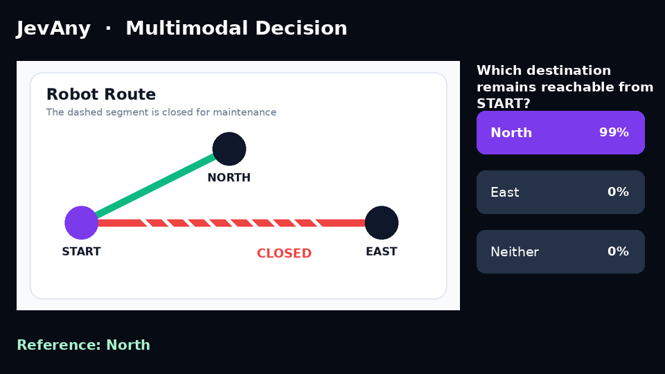
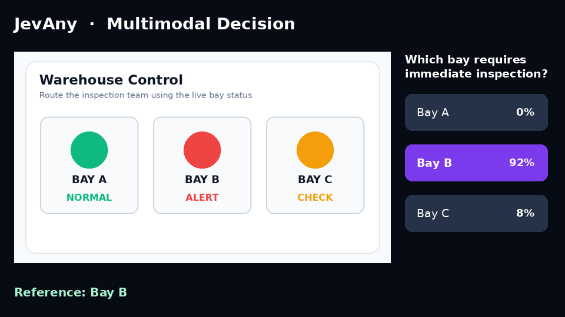

JEVANY / DOCUMENTATION
Evaluation
Model family v2
This section contains the full results for the five current LoRA SFT releases. Transfer also informed model development and serves as a diagnostic comparison.
Transfer is the cross-domain evaluation built from
Kev's frozen transfer-v9 suite
for cross-domain and robustness evaluation over 1,046 clean, knowable decisions.
Its item-level mean spans Emotion, PAWS, QNLI, TweetEval,
MMLU, MMLU-Pro, SciQ, and four robustness slices. JevBench is accuracy across
all 231 public development items. NLL, Brier,
and ECE in the main table are Transfer metrics; every run covers every item.
| Model | Transfer ↑ | JevBench ↑ | NLL ↓ | Brier ↓ | ECE ↓ |
|---|---|---|---|---|---|
| Kev-4B | 74.19% | 75.32% | 0.858 | 0.380 | 0.125 |
Kev-27B (01b8199) |
82.31% | 85.28% | 0.533 | 0.265 | 0.050 |
| Jev 1.13.0 | 85.37% | 86.58% | 0.644 | 0.212 | 0.033 |
Laya (55cf4c4) |
52.29% | 58.01% | 1.264 | 0.615 | 0.127 |
| JevAny releases | |||||
| JevAny-Gemma-4B | 70.84% | 77.49% | 0.706 | 0.369 | 0.056 |
| JevAny-Qwen3.5-4B | 78.68% | 80.09% | 0.587 | 0.297 | 0.035 |
| JevAny-Qwen3.5-4B-Direct-Token | 78.20% | 80.95% | 0.564 | 0.291 | 0.029 |
| JevAny-Muse-Glimmer-30B | 83.46% | 87.45% | 0.464 | 0.229 | 0.032 |
| JevAny-Qwen3.8-27B | 86.04% | 90.04% | 0.388 | 0.195 | 0.026 |
The 27B release uses step 44,319. Against the earlier step 22,160 checkpoint, it trades one JevBench answer for three additional Transfer answers and improves NLL on both suites:
| Step | Transfer accuracy | Transfer NLL | JevBench accuracy | JevBench NLL | Correct across both |
|---|---|---|---|---|---|
| 22,160 | 85.76% | 0.392 | 90.48% | 0.270 | 1,106 / 1,277 |
| 44,319 | 86.04% | 0.388 | 90.04% | 0.265 | 1,108 / 1,277 |
Transfer breakdown
Columns are dataset or robustness-slice accuracy. Sample counts are respectively 80 / 80 / 80 / 80 / 80 / 200 / 80 / 80 / 96 / 80 / 110.
| Model | Emo | PAWS | QNLI | Tweet | MMLU | M-Pro | SciQ | Buried | Comp. | Policy | Ctrl. | Mean |
|---|---|---|---|---|---|---|---|---|---|---|---|---|
| Baselines | ||||||||||||
| Kev-4B | 53.75 | 73.75 | 92.50 | 73.75 | 70.00 | 50.00 | 98.75 | 66.25 | 92.71 | 77.50 | 92.73 | 74.19 |
| Kev-27B | 60.00 | 78.75 | 95.00 | 80.00 | 83.75 | 66.00 | 97.50 | 76.25 | 89.58 | 96.25 | 99.09 | 82.31 |
| Jev 1.13.0 | 58.75 | 80.00 | 91.25 | 81.25 | 90.00 | 84.00 | 98.75 | 70.00 | 90.62 | 97.50 | 94.55 | 85.37 |
| Laya | 61.25 | 77.50 | 83.75 | 75.00 | 33.75 | 11.00 | 87.50 | 58.75 | 51.04 | 52.50 | 47.27 | 52.29 |
| JevAny (Ours) | ||||||||||||
| JevAny-Gemma-4B | 75.00 | 80.00 | 91.25 | 80.00 | 65.00 | 38.50 | 97.50 | 70.00 | 67.71 | 77.50 | 81.82 | 70.84 |
| JevAny-Qwen3.5-4B | 86.25 | 75.00 | 93.75 | 81.25 | 77.50 | 58.50 | 97.50 | 77.50 | 87.50 | 76.25 | 81.82 | 78.68 |
| JevAny-Qwen3.5-4B-Direct-Token | 85.00 | 77.50 | 95.00 | 81.25 | 75.00 | 52.50 | 98.75 | 78.75 | 86.46 | 83.75 | 81.82 | 78.20 |
| JevAny-Muse-Glimmer-30B | 81.25 | 77.50 | 92.50 | 83.75 | 83.75 | 61.00 | 98.75 | 82.50 | 95.83 | 98.75 | 90.91 | 83.46 |
| JevAny-Qwen3.8-27B | 91.25 | 86.25 | 91.25 | 85.00 | 87.50 | 67.50 | 97.50 | 81.25 | 89.58 | 98.75 | 94.55 | 86.04 |
Buried tests hidden instructions; Comp. tests AND/OR/conditional composition;
Policy contrasts authorization/deadline rules; Ctrl. contains 11 knowable
policy controls. Values are percentages.
JevBench breakdown
| Model | Easy | Original | Hard | Score |
|---|---|---|---|---|
| Baselines | ||||
| Kev-4B | 100.00% | 94.44% | 52.25% | 75.32% |
| Kev-27B | 100.00% | 100.00% | 69.37% | 85.28% |
| Jev 1.13.0 | 100.00% | 98.61% | 72.97% | 86.58% |
| Laya | 95.83% | 70.83% | 33.33% | 58.01% |
| JevAny (Ours) | ||||
| JevAny-Gemma-4B | 100.00% | 95.83% | 55.86% | 77.49% |
| JevAny-Qwen3.5-4B | 100.00% | 95.83% | 61.26% | 80.09% |
| JevAny-Qwen3.5-4B-Direct-Token | 100.00% | 98.61% | 61.26% | 80.95% |
| JevAny-Muse-Glimmer-30B | 100.00% | 97.22% | 75.68% | 87.45% |
| JevAny-Qwen3.8-27B | 100.00% | 97.22% | 81.08% | 90.04% |
The direct-token 4B model leads the released 4B models on JevBench, while the
pointer 4B model is slightly better on Transfer. Kev and Laya use complete local
public-checkpoint runs (Kev-27B pinned to 01b8199, Laya to 55cf4c4); Jev uses
a complete local Transfer API run and JevBench's published per-tier accuracy.
What we ablated
- Pointer structure: linear, MLP, and zero-initialized residual heads; the residual head won the controlled screen on development NLL and calibration.
- Representation readout: decision-token, query-mean, option-mean, and combined variants. Query-mean led the early screen; the release recipe uses decision-marker / option-close after the full model-family run.
- Loss: cross-entropy, pure InfoNCE, and mixed objectives; CE gave the best Transfer accuracy in the loss sweep, while small contrastive terms mainly improved calibration. The released checkpoints use CE.
- Readout family: at 4B, direct-token improves JevBench (80.95% vs 80.09%), while pointer is slightly stronger on Transfer (78.68% vs 78.20%).
Reproducibility
Transfer reports all 1,046 scored decisions; JevBench reports all 231 public development items. Exact suite hashes and unrounded metrics are in the machine-readable results. Release manifests, checkpoint-native reload reports, and GPU loader/reconstruction parity were checked before publishing.
The README comparison figure ranks models by the
equal-weight mean of Transfer and JevBench accuracy, using unrounded values.
The ordering depends on these weights: at 4B, direct-token leads with equal suite
weights, while pointer leads with equal item weights. Ranks reflect these point
estimates. Model icons and their sources are in
model-logos/.
Regenerate the figure from the repository root with matplotlib and cairosvg installed:
python scripts/plot_evaluation_overview.py
Machine-readable release results · Historical results · Technical report.
Training compute
| Model | Released step | Parallel GPUs | Wall time | GPU-hours |
|---|---|---|---|---|
| JevAny-Gemma-4B | 2,771 | 32 H200 | ~3.28 h | ~104.9 |
| JevAny-Qwen3.5-4B | 13,850 | 32 H200 | 10.33 h | 330.6 |
| JevAny-Qwen3.5-4B-Direct-Token | 9,695 | 32 H200 | 8.41 h | 269.1 |
| JevAny-Muse-Glimmer-30B | 3,324 | 40 H200 | 2.88 h | 115.4 |
| JevAny-Qwen3.8-27B | 44,319 | 32 H200 | 39.43 h | 1,261.7 |
The five released checkpoints represent approximately 2,082 H200 GPU-hours of training, with at most 40 GPUs used in parallel within one run. GPU-hours are elapsed training time through the released checkpoint multiplied by the DDP world size; ablations, evaluation, and training after a selected checkpoint are excluded. Gemma uses run/checkpoint timestamps because its earlier checkpoint format did not store cumulative elapsed seconds; the other figures come from checkpoint or terminal trainer telemetry.
Earlier releases and evaluations
The JevBench and Kev comparison evaluates both released JevAny checkpoints and all 14 distinct released Kev checkpoints across 67 public panels. It includes complete result tables, published official Jev references, and the private partitions that remain unavailable. The earlier release, multimodal, and interactive measurements are retained below.
SFT is the default checkpoint. RLCR improved development NLL by 0.005 and did not improve transfer accuracy.
The v0.2 release record reports results on 1,004 development questions and 1,046 transfer questions. NLL (negative log-likelihood) penalizes low probability on the correct answer; lower is better.
| Model | Development accuracy | Development NLL ↓ | Transfer accuracy | MMLU-Pro | AI2D | MMMU |
|---|---|---|---|---|---|---|
| JevAny-27B-SFT v2 | 90.34% | 0.265 | 82.41% | 73.0% | 86.0% | 68.0% |
| JevAny-27B-RLCR v2 | 89.74% | 0.260 | 82.31% | 73.5% | 87.0% | 63.0% |
| Jev | n/a | n/a | 85.37% | 84.0% | n/a | n/a |
RLCR changed transfer accuracy by -0.10 percentage points against SFT, with 3 fixes and 4 regressions. The paired 95% bootstrap interval is [-0.58, 0.39] points. The small development NLL gain did not survive independent calibration. Jev provides a hosted-system comparison on the same decision suite, using different model weights.
Development accuracy and NLL exclude 100 VideoFeedback questions whose labels are all the same highest score. These questions exercise the video path; the video accuracy evaluation uses MVBench below. AI2D and MMMU use native images through the backbone's vision path. The training set also contains native A-OKVQA and ScienceQA images.
Native image and video decisions
We evaluated the released SFT checkpoint with the real media, a neutral blank asset, and media shuffled between questions within each task. We shuffle by unique media group, so questions that share one image or video receive the same replacement. The media sensitivity gate requires full-media accuracy to exceed the stronger control by at least five points, with a positive paired media-group bootstrap interval. Passing the gate indicates media use. The tables also report task accuracy.
| Panel | Questions | Full media | Blank | Shuffled | Gain over strongest control |
|---|---|---|---|---|---|
| MMStar clean image panel | 1,330 | 74.5% | 29.0% | 28.9% | +45.5 [+42.4, +48.6] |
| MVBench three-task video panel | 600 | 33.5% | 12.3% | 15.3% | +18.2 [+13.9, +22.4] |
| MVBench task | Questions | Full media | Blank | Shuffled | Gain over strongest control |
|---|---|---|---|---|---|
| Fine-grained action | 200 | 45.0% | 14.0% | 16.5% | +28.5 [+19.5, +37.5] |
| Egocentric navigation | 200 | 43.5% | 23.0% | 29.0% | +14.5 [+6.3, +22.4] |
| Action antonym | 200 | 12.0% | 0.0% | 0.5% | +11.5 [+7.0, +16.0] |
From the image panel we dropped invalid choices and every item that matched the training, calibration, or development splits by media or by normalized question and unordered option text. No exact or perceptual media overlap, question-option overlap, or source-ID overlap remains. Its task-macro random and label-position baselines are 26.7% and 31.8%. The video panel passes the same zero-overlap checks. Its overall media gain is significant, though the action-antonym score is low and the video probabilities are badly calibrated.
Full metrics, per-task intervals, dataset revisions, checkpoint hashes, and control provenance are in the image report and the video report. The internal evaluation checkpoint and public SFT release have identical LoRA and pointer-head tensors; the equivalence record accounts for the embedded release temperature. Upstream terms keep us from redistributing the benchmark media.
The examples below use synthetic media we created and released with this repository. Each modality shows two cases from a predeclared set of three; the selection record lists every probability. The two video cases ask the same question about different clips, with motion determining the answer.
 Jev-Image: which destination is still reachable |
 Jev-Image: which bay needs inspection |
Jev-Video: the cart finishes west |
Jev-Video: the cart finishes north |
Jev-Agent
FrozenLake 98% of 50 episodes solved |
Sokoban 48% of 50 episodes solved |
We expose only the legal actions at each step, and JevAny picks one without generating text. FrozenLake lets you recover from a bad step. Sokoban gives you no way to undo a push, so one choice can decide the episode.
Jev-Test
We tested transductive adaptation without ground-truth labels. The parent produced 16 stochastic decisions per input, a strict majority became the pseudo label, and we dropped ties. We locked the protocol before scoring the adapted models against gold labels.
| Dataset | Parent accuracy | Pseudo-label SFT | Pseudo-label RLCR | Parent NLL | SFT NLL | RLCR NLL |
|---|---|---|---|---|---|---|
| MMLU-Pro | 73.00% | 72.00% | 72.00% | 0.942 | 0.930 | 0.933 |
| MuSR | 60.71% | 61.11% | 60.98% | 1.122 | 1.552 | 1.483 |
MMLU-Pro NLL improved by 0.012 while accuracy fell a point. MuSR accuracy moved by at most 0.40 points while its NLL rose from 1.122 to 1.552. This self-training recipe is a negative result, and the code stays experimental. The locked protocol and release measurements document the full experiment.